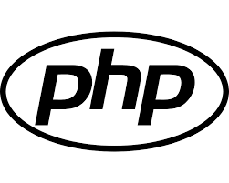

Python é uma linguagem de programação de alto nível, interpretada, orientada a objetos e de tipagem dinâmica. Foi criada por Guido van Rossum e lançada pela primeira vez em 1991. É conhecida por sua sintaxe simples e fácil legibilidade, o que a torna uma escolha popular para iniciantes e profissionais em várias áreas de desenvolvimento de software.
PHP é uma linguagem de script do lado do servidor amplamente utilizada para desenvolvimento web. Originalmente criada por Rasmus Lerdorf em 1994, PHP é uma das linguagens mais populares para criar sites dinâmicos e interativos. É especialmente adequada para integração com HTML e pode ser usada para criar desde pequenos scripts até aplicativos web complexos.